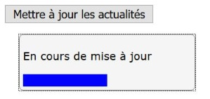

Progressbar
Description

Le composant progressbar sert à informer l'utilisateur, à l'aide d'une barre de progression, de l'action en cours qui peut être un téléchargement, l'ouverture d'une page ou encore la mise à jour dynamique d'un contenu.
Restitution
- le composant doit posséder un nom accessible ;
- une valeur doit être vocalisée à chaque étape de la progression ;
Note : la progression peut être annoncée par un signal sonore progressif ou par l'annonce d'une valeur de pourcentage.
Interactions de base au clavier
La progressbar ne nécessite aucune interaction au clavier.
Motif de conception : Progressbar (WAI-ARIA 1.1)
Test de la progressbar avec JAWS
Lorsque JAWS rencontre une barre de progression, il restitue l'évolution de cette progression en annonçant un pourcentage en fonction de l'évolution de la barre.
Étape 1
Utiliser la touche tabulation pour aller jusqu'au bouton « Mettre à jour les actualités » ou appuyer sur u jusqu'à atteindre le bouton « Mettre à jour les actualités ».
JAWS prononce « bouton mettre à jour les actualités »
Étape 2
Appuyer sur la touche Espace ou la touche entrée pour activer le bouton.
JAWS annonce « barre de progression actualités », puis il énumère le pourcentage.
Test de la progressbar avec NVDA
Étape 1
Utiliser la touche Tabulation pour aller jusqu'au bouton « Mettre à jour les actualités » ou appuyer sur b jusqu'à atteindre le bouton « mettre à jour les actualités ».
NVDA prononce « mettre à jour les actualités bouton ».
Étape 2
Appuyer sur la touche Espace ou la touche Entrée pour activer le bouton.
NVDA annonce « en cours de mise à jour, barre de progression ».
Note : selon le paramètre choisi, il annonce le pourcentage « 20%, 30%… », on entend une série de bips de plus en plus aigus, on entend le pourcentage et les bips ou on n'entend rien du tout.
Test de la progressbar avec VoiceOver
Étape 1
Utiliser la touche Tabulation pour aller jusqu’au bouton « Mettre à jour les actualités ».
VoiceOver prononce « Mettre à jour les actualités bouton, vous êtes actuellement sur bouton pour cliquer ce bouton, appuyez sur Contrôle + Option + Espace ».
Étape 2
Appuyer sur VO + Espace pour activer le bouton.
VoiceOver annonce « 0% Actualités 0%, vous êtes actuellement sur indicateur de progression ». Durant la progression, on entend une série de clics, l'annonce du pourcentage ou rien du tout, selon le paramètre sélectionné dans la verbosité de VoiceOver.
À noter que si vous appuyez de nouveau sur Contrôle + Option + Espace , le pourcentage de progression est vocalisé.